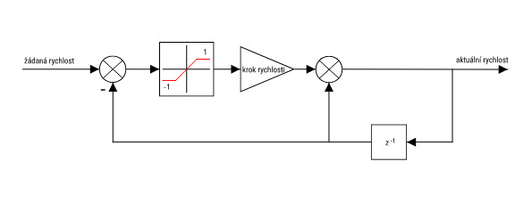

Řízení motorů
Cvičící: Ing. František Burian Ph.D.
Cile
- Vyzkoušet chování reálného krokového motoru v reálných podmínkách
- Rozpohybovat kola simulovaného robota tak, aby bylo možné řidit jeho pohyb pomocí kinematiky.
- Zprovoznit čtení ujeté dráhy jednotlivých motorů.
Prerekvizity
- Pro HW část funkční hardware
- Funkční komunikace se simulátorem (ověřit pomocí zprávy
PING) - Funkční parsování NMEA řetězců
Komunikace s reálným budičem krokového motoru
Řetězec řízení
Raspberry -- I2C -- interpolátor -- budič -- motor -- převodovka -- kolo
Příklad komunikace s krokovým motorem
Vraťte se k programu z předchozího cvičení, založte novou větev "hw-cv6-km2" na původním masteru a vložte tento kód:
using namespace RoboUtils;
const auto LBUT = Pin::PA7;
const auto RBUT = Pin::PA6;
int main()
{
I2C i2c{"/dev/i2c-3"};
GPIO gpio{&i2c};
KM2 km2{&i2c};
gpio.input(LBUT | RBUT, true);
int spdl = 2, spdr = 2; // 2 mikrokroky za 1/40kHz
while (true) {
delay(50); // zajisteni periody smycky
auto [ left, right] = km2.driveodo(spdl,spdr);
// zde pracujte s odometrií a hodnotami rychlosti motoru
}
// dobra aplikace po sobe na konci uklidi
km2.drive(0,0);
}
COMMIT / PUSH
Program spusťte, motor by se měl pomalu roztočit. Prozkoumejte API knihovny jakým způsobem to je provedeno.
Motor připojený ke kolu - metrický popis jednotek
Krokový motor se s každým impulzem na vinutích posunuje o 1 krok (step). Tyto kroky je možné rozdělit na menší části, mikrokroky.
✅ Počet kroků na otáčku je vlastností daného krokového motoru. Mikrokrok a množství jeho úrovní je vlastností použitého budiče motorů.
✅ Z katalogového listu motoru byste zjistili, že rozměr kroku je 1.8°, na plnou otáčku tedy připadá kolik kroků?
Odpověď
360 / 1.8 = 200✅ Zadaný budič motorů rozdělí krok do 32 mikrokroků, kolik mikrokroků připadá na celou otáčku?
Odpověď
200 * 32 = 6400Pokud řídíme reálné fyzikální systémy je vhodné programovat pomocí reálných fyzikálních jednotek a vždy to dodržovat, nestane se, že nebudeme vědět jaký rozměr má nějaká proměnná.
Pro řízení motoru je vhodná úhlová rychlost zadaná v otáčkách za sekundu a tuto rychlost převeďte mikrokroky za sekundu.
Odpověď
speedInMicrosteps = targetSpeed * microstepsPerRevolutionNaopak, pro popis odometrie, tj ujeté vzdálenosti kolem je vhodné popsat veličinu v jednotkách SI tedy metrech. To samozřejmě ovlivňuje průměr (respektive obvod) kola. Jak to provedeme?
Odpověď
targetPosition = positionInMicrosteps * wheelCircumference / microstepsPerRevolutionZjištění maximálních rychlostí reálného motoru
Upravte program v příkladu tak, abyste mohli pomocí tlačítek PB6 a PB7 přidávat a ubírat rychlost, kterou posílá do motorů. Sledujte vliv této rychlosti na napájecím proudu obou motorů (zdroj DIAMETRAL, měření proudu).
Pozorování
Proud, tedy výkon dodávaný do zátěže od určité rychlosti začne klesat !COMMIT / PUSH
Vysvětlete pozorované chování a zhodnoťte důsledky pro řízení takovéhoto motoru
Odpověď
V určitých otáčkách již nevyvineme sílu na pokračování otáčení motorem a motor se zastaví.Upravte program tak, aby se po stisknutí tlačítka motor rozjel na rychlosti, při které byl naměřen poloviční proud v předchozím experimentu. Zkuste zatěžovat (prstem) motor, a pozorujte chování. Zkuste totéž při rychlosti, při které byl proud naměřený na diametralu maximální. Pozorujte chování a zhodnoťte pozorování.
Odpověď
Při nejvyšším příkonu můžeme vyvinout nejvyšší sílu. Sílu temelínu najdeme v hermelínu. Čím vyšší bude mít robot hmotnost, tím více zatěžujeme motory a tím menší zrychlení utáhne. Problém lze obejít snížením síly potřebné pro otáčení - tj snížením zrychlení.COMMIT / PUSH
Rampový generátor
Snížení zrychlení lze realizovat různými způsoby (například interpolací po S-křivce). Jednodušší variantou je interpolace po obyčejné rychlostní
(někdy též zvané trapézoidní) rampě, která je mnohem jednodušší.
✅ Algoritmus: V každém kroku řízení k momentální rychlosti motoru přičteme požadovanou diferenci rychlosti se stejným znaménkem jako má rozdíl požadovaná rychlost - momentální rychlost. Tuto diferenci však saturujeme na maximálních hodnotách.

Generátor rampy, který běží periodicky, efektivně řeší problém s opakováním řídicích zpráv pro motory, stačí periodicky získávat novou hodnotu rychlosti z generátoru ramp a tu posílat budiči motoru (simulátoru).
Upravte program tak, aby se po stisknutí tlačítka motor rozjel na hodnotu rychlosti, při které byl naměřen poloviční proud v předchozím experimentu a porovnejte výsledky s předchozím měřením
Pozorování
Motor se snížením rampy lze zatížit více a tím pádem dosáhnout vyšší rychlosti bez zastavení. Čím pomalejší rampa je, tím více síly motoru zbyde pro udržení rychlosti, ale reakce motoru se notně zpomalí.COMMIT / PUSH
NMEA protokol
Otevřete si projekt z minulého / předminulého cvičení, kde jste zpracovávali NMEA protokol. Následující body již nemusíte tvořit na cvičení, lze je realizovat i v simulátoru.
V tomto cvičení již budete ovládat robota pomocí NMEA zpráv, je tedy nutné pravidelně navracet simulátor do výchozího stavu. Toho lze dosáhnout jak opětovným spuštěním jak simulátoru, tak vašeho programu, lze to ale řešit přímočařeji, a to tak, že při startu vašeho programu simulátoru pošlete NMEA zprávu RESET.
✅ Po odeslání resetu byste měli přijmout NMEA zprávu $RESET,DONE.
Pakliže nepřijmete DONE, program ukončete s chybou.
Simulátor simuluje chování dvou krokových motorů, na které jsou namonotována kola uživatelsky definovaného průměru. Motory jsou řízeny pomocí NMEA zpráv SPEED a ODO posílaných simulátoru.
Nastavení rychlosti kol
Příkaz pro nastavení rychlosti motoru je SPEED. Pošleme tedy tento příkaz simulátoru s nějakou malou rychlostí levého kola, třeba 0.05 otáčky za sekundu a nulovou rychlostí pravého kola.
✅ Pokud nám vše správně funguje, měl by se robot v simulátoru začít pomalu otáčet.
Motor se po asi 1 s otáčení zastaví, toto je bezpečnostní funkce, která je implementována v našich reálných budičích motorů. V případě softwarové chyby, kdy by spadl řídicí program, by se totiž robot mohl nekontrolovatelně rozjet. Je tedy nutné řídicí příkazy posílat periodicky.
✅ Pokuste se najít maximální rychlost, které jste schopni v simulátoru bez rampy dosáhnout.
COMMIT / PUSH
Čtení ujeté vzdálenosti
Pro lokalizaci robota v prostředí lze využít výpočtu odometrie z ujeté vzdálenosti obou kol, to bude předmětem dalších cvičení, je ale vhodné si to již teď připravit. Čtení ujeté vzdálenost je v simulátoru implementováno pomocí příkazu ODO. Tento příkaz způsobí, že nám simulátor pošle ujetou vzdálenost v mikrokrocích pro obě kola a sám si vnitřní hodnotu ujeté vzdálenosti vynuluje.
✅ Vyzkoušejte si čtení ujeté vzdálenosti obou motorů a jejich přepočet na ujeté metry.
✅ Vyzkoušejte si, že se hodnota ujeté vzdálenosti opravdu nuluje.
Očekávané výstupy práce v tomto cvičení
✅ Jste schopni ovládat oba motory simulovaného robota v plném rozsahu rychlostí.
✅ Máte naimplementováno generování ramp pro oba motory.
✅ Jste schopni ze simulátoru získávat data o ujeté vzdálenosti pro oba motory.